時系列図はX軸に時間、Y軸に計算値のグラフを作成することができます。以下に時系列図作成例を示します。
- 盛土法尻位置のX方向変位（水平変位）時系列図
- 地表面のY方向変位（沈下量）時系列図
- 地盤中央位置σy（鉛直方向応力）時系列図
| [盛土法尻位置のX方向変位（水平変位）時系列図] |
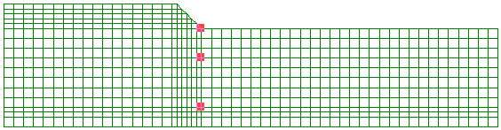
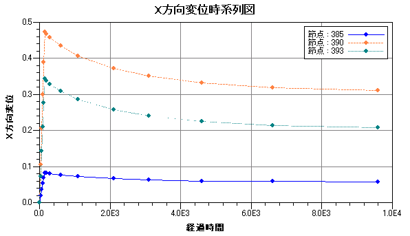
| [地表面沈下量のY方向（沈下量）時系列図] |
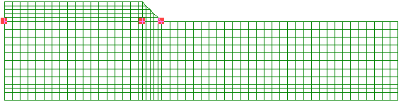
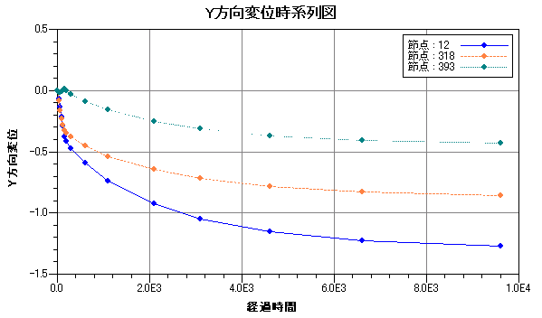
| [地盤中央位置水平方向σy（鉛直方向応力）時系列図] |

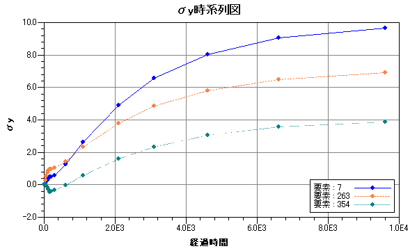
節点もしくは要素を選択中にメイン画面メニューの[ツール]−[時系列図]を選択すると、時系列図を表示できます。節点・要素の選択方法は以下をご参照下さい。分布図・時系列図では共通な操作があり、グラフ設定は共用します。以下の「共通操作」と「グラフ設定」をご参照下さい。
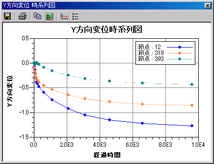
以下に分布図の操作手順を示します。
- 「コンタアイテム」から計算結果を選択します。
- 節点もしくは要素を選択します。
- メイン画面メニューの[ツール]−[時系列図]を選択し時系列図を表示します。
- 「系列表示設定」から不要な系列を外します。
時系列図はX軸に時間、Y軸に計算値のグラフを作成することができます。以下に時系列図作成例を示します。
- 盛土法尻位置のX方向変位（水平変位）時系列図
- 地表面のY方向変位（沈下量）時系列図
- 地盤中央位置σy（鉛直方向応力）時系列図
[盛土法尻位置のX方向変位（水平変位）時系列図] 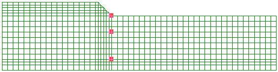
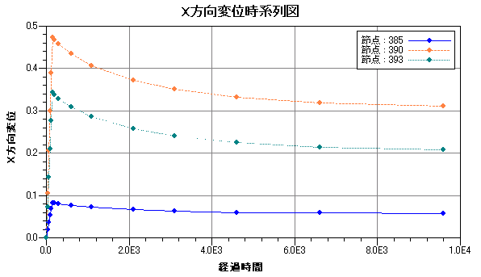
[地表面沈下量のY方向（沈下量）時系列図] 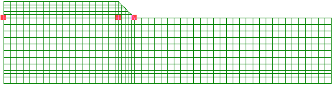
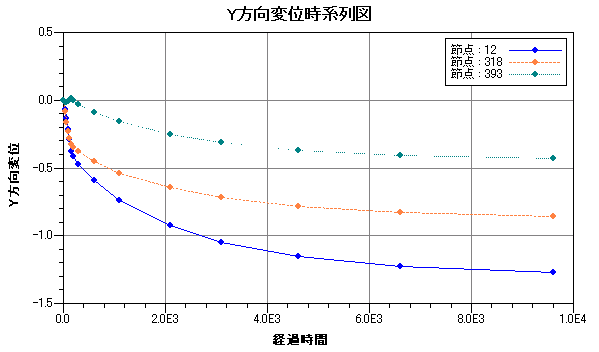
[地盤中央位置水平方向σy（鉛直方向応力）時系列図]
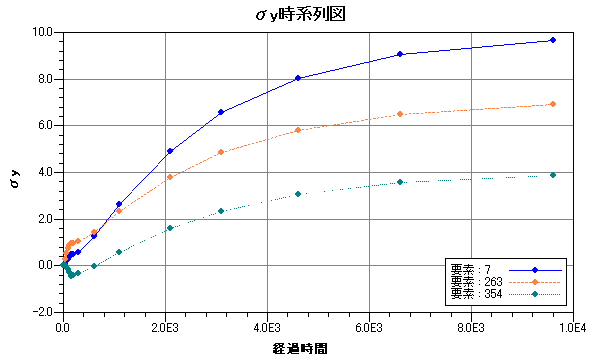